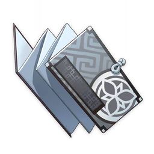

|
|  |
|  |
|  | | |
| | | "Xinyan's the name, and Rock 'n' Roll's the game!"
She is from Liyue and is a rock 'n' roll artist, although it is unpopular in Liyue.
She performs often in Liyue despite this, and has garnered a fanbase because of her music.
Born October 16th, Xinyan is Liyue's sole rock 'n' roll artist. Being granted a Pyro vision by the archons, this has given her an equally fiery personality. This, however, has made people view her as 'scary' or 'weird', but she doesn't let this get her down! She likes to perform in Liyue harbour, and is thankful for all who attends her performances. Her pyro vision helps Xinyan with her fiery performances, impressing her fans. She does not have any training in the art of rock 'n' roll, but this doesn't stop her from doing her very best at all times!
Rock 'n' roll originates from the nation of Fontaine, and traveled to Liyue, where Xinyan discovered and pioneered it.
Her vision, like most Pyro vision wielders, was most likely granted due to her passion for the art of rock 'n' roll music. Like Xiangling who has a passion for food, and Hu Tao has a passion for her job, Xinyan's passion for rock 'n' roll was most heavily described when, before she had her vision, she would often practice with fire atop of Mt. Tianheng for a performance, she was finally bestowed a Pyro vision after considering leaving Liyue for Fontaine to persure rock 'n' roll, until she realised that to leave was not the spirit of rock 'n' roll, so she stayed.
Unfortunately, Xinyan is feared amongst many in Liyue harbour because of her fiery appearance. While she tries her best to be kind to everyone, her heavy accent and imposing style drives many away, and has caused her to make some children cry. She has tried massaging her face and eyes to appear softer,and has practiced smiling and softer expressions, to no avail. One time, she found a small child being bullied. As anyone would, she went over to help the child. After giving the child a friendly smile and a pat on the head, the child wet themselves, and the bullies fled in panic as they called Xinyan a 'monster' who would 'eat us all'! Xinyan's reply of 'I ain't no monster, and I ain't gonna eat y'all!' was to no avail, because as soon as she began to shout, all her hard work had come undone.
Some of Xinyan's notable friends and fans include Xiangling, Yun Jin, Zhongli, Baizhu, Chongyun, Keqing, Qiqi, Yanfei, Xingqiu and Beidou.
Xiangling is one of Xinyan's closest friends, and Xinyan often goes to Wanmin
Restaurant for musical inspiration and tries Xiangling's newest creations when
no-one else usually will. While eating Xiangling's newest dishes, the fierce
flavours create new and exciting ideas in Xinyan's mind, and she offers her
greatest compliments to the chef - 'Tell you what Xiangling, that dish rocked!'
Which, unfortunately, Xiangling doesn't consider that to be as high of a praise
as Xinyan does.
Beidou is another one of Xinyan's closest friends. Xinyan and Beidou get along
extremely well according to the both of them, and Xinyan will always have a place
on Beidou's ship, The Crux. She is also loved by most of the sailors, and has
even wrote them a song, even if Beidou is not one for Rock 'n' Roll music, which
the crew often joins in with her song, which Xinyan has started to label as a new
Sea Shanty.
Yun Jin is one of Xinyan's biggest supporters. She attends Xinyan's performances
at least 3 times a week, no matter how busy her schedule is. She even went to visit
Xinyan's house one time, and almost thought she was at the wrong house until Xinyan
answered the door, since the house was extremely clean and without music presence
of Rock 'n' Roll, which Yun Jin thought there would be more of. Xinyan was scared
this would drive her away, but this only strengthened Yun Jin's fan status.
Zhongli is someone noteable to Xinyan, as when no-one else would let her perform,
he offered a place for her to at the Wangshen Funeral Parlor. While she does consider
him a bit weird as a funeral parlor worker, she is extremely grateful for his
hospitality.
Chongyun is another fan of Rock 'n' Roll, who was invited to come by Xingqiu. Xinyan
describes him as sort of introverted and interesting. Chongyun had something to say
to Xinyan, but she couldn't hear him over the loud music, but it wasn't long before
he was also on the stage with Xinyan singing and rocking his heart out. It's no
surprise, due to how amazing Xinyan's concerts really are. However, he does need to
avoid her concerts as much as possible because of this reason and him being prone
to increased heat.
Keqing is also a fan of Xinyan and her music, and has openly embraced the change and
deviation from tradition. While she does think it is 'too noisy' for 'tradition standards',
she doesn't care, as she is not one to favour traditions as she is often critical of
Rex Lapis' rule. She also believes that good music should have great reach, which may explain
why the Ministry of Civil Affairs and the Tianquan were quick to ammend their laws to allow
Xinyan to perform in areas, even if she, quite tediously, has to apply to perform there.
Qiqi seems to know of Xinyan, but unfortunately doesn't remember her. She may have seen her
perform around Liyue, or may have seen her be told off by the Millelith, or may
remember her when she came to perform for Baizhu as a thank you. We may never
know.
Yanfei has came across one of Xinyan's performances one time when she was debating
her Codex Finalem. She was quite surprised by the introduction of a new musical art,
which inspired something in her. She realised that, learning an instrument from scratch
is difficult, although Xinyan may contest against this since she never learned Guitar
formally, she settled on a good backup plan. If such a day where she would no longer
have a job were to arrive, she would become a rapper.
Xingqiu seems to think of Xinyan as 'disruptive', and thinks ill of her due to him
not being able to curl up with a good book as often as he would like, although this
may be a ruse as Xinyan has talked about him inviting Chongyun to one of her performances,
so maybe he does enjoy her music, he just hates how much more addicting it is compared
to his books.
| Ascension 0 > 1 | |||
|---|---|---|---|
 |
 |
 |
|
| 20,000 | 1 | 3 | 3 |
| Ascension 1 > 2 | ||||
|---|---|---|---|---|
|
 |
 |
|
|
| 40,000 | 2 | 3 | 10 | 15 |
| Ascension 2 > 3 | ||||
|---|---|---|---|---|
|
|
|
 |
|
| 60,000 | 6 | 4 | 20 | 12 |
| Ascension 3 > 4 | ||||
|---|---|---|---|---|
|
|
 |
|
|
| 80,000 | 8 | 3 | 30 | 18 |
| Ascension 4 > 5 | ||||
|---|---|---|---|---|
|
|
|
 |
|
| 100,000 | 12 | 6 | 45 | 12 |
| Ascension 5 > 6 | ||||
|---|---|---|---|---|
|
|
 |
|
|
| 120,000 | 20 | 6 | 60 | 24 |
| Total Cost | |||||
|---|---|---|---|---|---|
|
|
|
|
|
|
| 420,000 | 46 | 168 | 18 | 30 | 36 |
|
|
|
|
||
| 1 | 9 | 9 | 6 | ||
| Talent Level 1 > 2 | ||
|---|---|---|
|
|
 |
| 12,500 | 6 | 3 |
| Talent Level 2 > 3 | ||
|---|---|---|
|
|
 |
| 17,500 | 3 | 2 |
| Talent Level 3 > 4 | ||
|---|---|---|
|
|
|
| 25,000 | 4 | 4 |
| Talent Level 4 > 5 | ||
|---|---|---|
|
|
|
| 30,000 | 6 | 6 |
| Talent Level 5 > 6 | ||
|---|---|---|
|
|
|
| 37,500 | 9 | 9 |
| Talent Level 6 > 7 | |||
|---|---|---|---|
|
|
||
| 120,000 | 4 | 4 | 1 |
| Talent Level 7 > 8 | |||
|---|---|---|---|
|
|
||
| 260,000 | 6 | 6 | 1 |
| Talent Level 8 > 9 | |||
|---|---|---|---|
|
|
||
| 450,000 | 9 | 12 | 2 |
| Talent Level 9 > 10 | ||||
|---|---|---|---|---|
|
|
 |
||
| 700,000 | 12 | 16 | 2 | 1 |
| Total Cost (Per 1 talent) | |||||
|---|---|---|---|---|---|
|
|
||||
| 1,652,500 | 3 | 21 | 38 | 6 | |
|
|
|
|
||
| 6 | 22 | 31 | 1 | ||
| Dance on Fire | |
|
NORMAL ATTACK
Performs up to 4 consecutive strikes. CHARGED ATTACK Drains Stamina over time to perform continuous spinning attacks against all nearby opponents. At the end of the sequence, perform a more powerful slash. PLUNGING ATTACK Plunges from mid-air to strike the ground below, damaging opponents along the path and dealing AoE DMG upon impact. |
|
| Sweeping Fever | |
|
Xinyan brandishes her instrument, dealing Pyro DMG on nearby opponents, forming a shield made out of her audience's passion. The shield's DMG Absorption scales based on Xinyan's DEF and on the number of opponents hit. Hitting 0 – 1 opponents grants Shield Level 1: Ad Lib. Hitting 2 opponents grants Shield Level 2: Lead-In. Hitting 3 or more opponents grants Shield Level 3: Rave, which will also deal intermittent Pyro DMG to nearby opponents. The shield has the following special properties: When unleashed, it infuses Xinyan with Pyro. It has 250% DMG Absorption effectiveness against Pyro DMG. |
|
| Riff Revolution | |
| Strumming rapidly, Xinyan launches nearby opponents and deals Physical DMG to them, hyping up the crowd. The sheer intensity of the atmosphere will cause explosions that deal Pyro DMG to nearby opponents. | |
| "The Show Goes On, Even Without An Audience..." | |
|
Decreases the number of opponents Sweeping Fervor must hit to trigger each level of shielding. Shield Level 2: Lead-In requirement reduced to 1 opponent hit. Shield Level 3: Rave requirement reduced to 2 opponents hit or more. |
|
| "...Now That's Rock 'N' Roll!" | |
| Characters shielded by Sweeping Fervor deal 15% increased Physical DMG. | |
| A Rad Recipe | |
| When a Perfect Cooking is achieved on a DEF-boosting dish, Xinyan has a 12% chance to obtain double the product. | |
 |
Violetgrass is found in Liyue on Cliff Edges. | |
|
Everflame Seed's are a boss drop from the Pyro Regisvine in Mondstat. | |
|
|
Treasure Hoarder Insignia's are most commonly found in Liyue, but can be found in Inazuma and are dropped by Treasure Hoarders. |
| Xinyan's shield 'Sweeping Fever' scales off of her DEF stat. | |
| Xinyan's burst 'Riff Revolution' scales off of her ATK stat. |